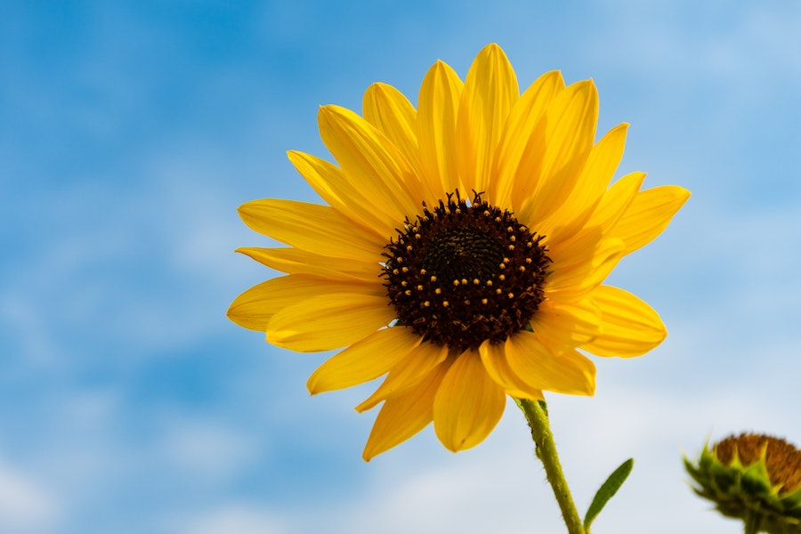
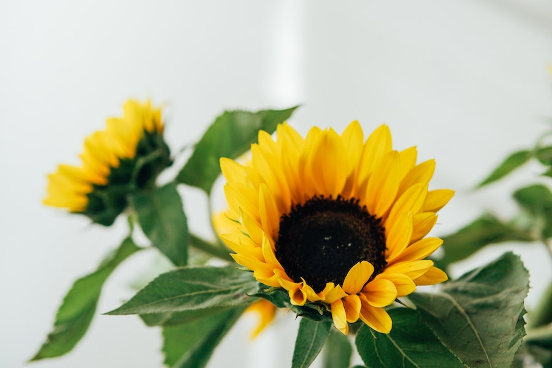

Imagens




Os girassóis são
nativos das Américas do Norte e Central e
são cultivados
em todo o mundo por sua beleza e sementes comestíveis.
O nome científico do girassol,
"Helianthus", deriva das palavras
gregas
"helios" (sol) e "anthos" (flor), o que significa "flor que segue o sol",
devido à sua característica de seguir a trajetória do sol durante o dia.
Os girassóis são conhecidos
por suas grandes flores amarelas com
centros escuros. Suas pétalas podem variar de amarelo a laranja e
marrom, dependendo da variedade.
As flores de girassol exibem um comportamento
heliotrópico, o que
significa que elas seguem a trajetória do sol durante o dia,
voltando-se na direção do sol nascente ao amanhecer e se
movendo para enfrentar o sol poente ao entardecer.
Os girassóis são frequentemente associados
a sentimentos de alegria,
vitalidade, lealdade, longevidade e adoração ao sol. Eles simbolizam
a
energia positiva e a busca pela luz.
girassóis são populares em
arranjos florais devido ao seu tamanho
impressionante e cores vibrantes. Eles são frequentemente usados
para criar arranjos alegres e radiantes.
Os girassóis são conhecidos por
crescerem rapidamente. Algumas
variedades
podem crescer até 3 metros em apenas alguns meses.
As sementes de girassol
são comestíveis e são usadas em uma
variedade de pratos
e lanches. Elas são uma fonte de proteína,
fibras e gorduras saudáveis.
O óleo de girassol
é amplamente produzido a partir das sementes
de girassol
e é usado na culinária e na indústria de cosméticos.
Alguns lugares
realizam festivais anuais de girassóis para celebrar
essas flores deslumbrantes. Esses festivais costumam incluir
exposições de flores, atividades
ao ar livre e oportunidades
para tirar fotos.
Os girassóis atraem abelhas e outros
polinizadores, ajudando a
promover a biodiversidade
no jardim.
Os girassóis são plantas anuais,
o que significa que completam
todo o seu ciclo de
vida em um único ano. No entanto, suas
sementes podem ser colhidas e replantadas para cultivos futuros.
Além dos girassóis comuns,
existem variedades de girassóis em miniatura,
como os
"girassóis de jardim", que são ideais para pequenos espaços de jardim.
Girassóis crescem melhor em locais
com sol pleno e solo bem drenado.
Eles são ideais para
jardins, canteiros de flores e vasos.
Além das variedades tradicionais,
existem girassóis ornamentais que
apresentam
pétalas de cores diferentes, como vermelho, rosa e marrom.
Buquês de girassóis frescos
podem ser encontrados em floriculturas,
mercados
e lojas de flores por preços que variam de R$ 30 a R$ 100, dependendo
do
tamanho do buquê,
do número de flores e da região.
Vasos de girassóis em floriculturas ou supermercados podem custar
entre
R$ 20 e R$ 70, dependendo do tamanho do vaso e da qualidade das plantas.
Se você preferir cultivar seus próprios girassóis a
partir de sementes,
pacotes de sementes de girassol podem ser encontrados
por preços
que variam de R$ 5 a R$ 15, dependendo da quantidade de sementes no pacote.
Mudinhas de girassol podem ser adquiridas por
preços que variam de
R$ 2 a R$ 10 por muda em viveiros e lojas de jardinagem.
Cultivar girassóis a partir de sementes ou mudas pode ser uma
opção econômica,
uma vez que você investe inicialmente no plantio e pode
desfrutar das flores ano após ano.
Em ocasiões especiais, como casamentos e eventos, os preços
dos girassóis podem
ser mais elevados devido à demanda específica e ao design
personalizado dos arranjos florais.
Algumas variedades de girassóis ornamentais, como os
girassóis anões e de
cores raras, podem ter preços ligeiramente mais altos
devido à sua exclusividade.